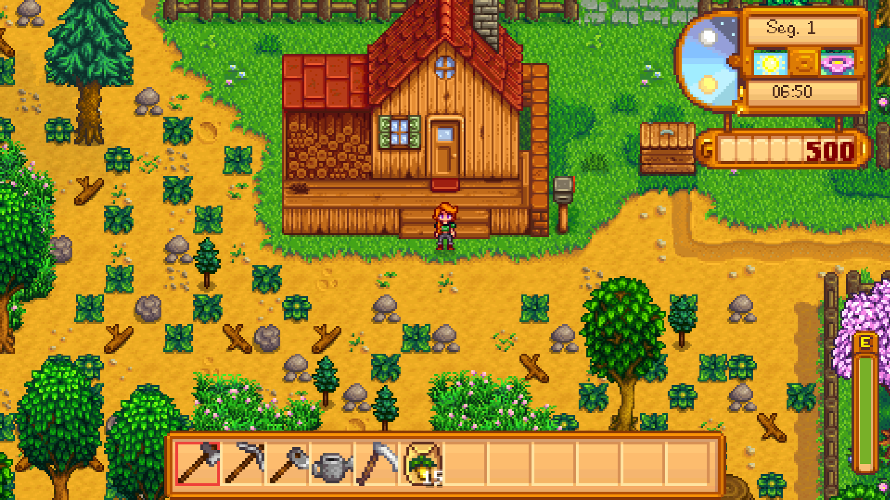
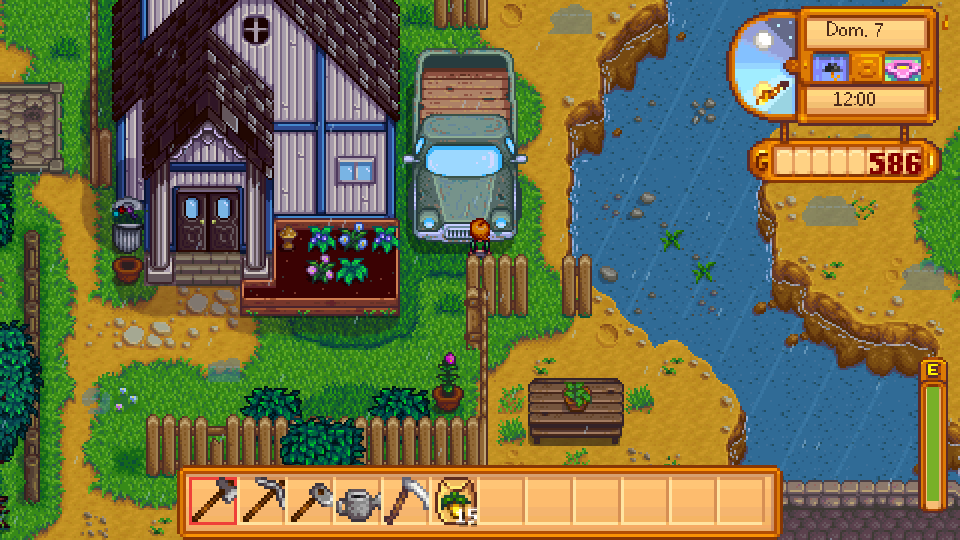
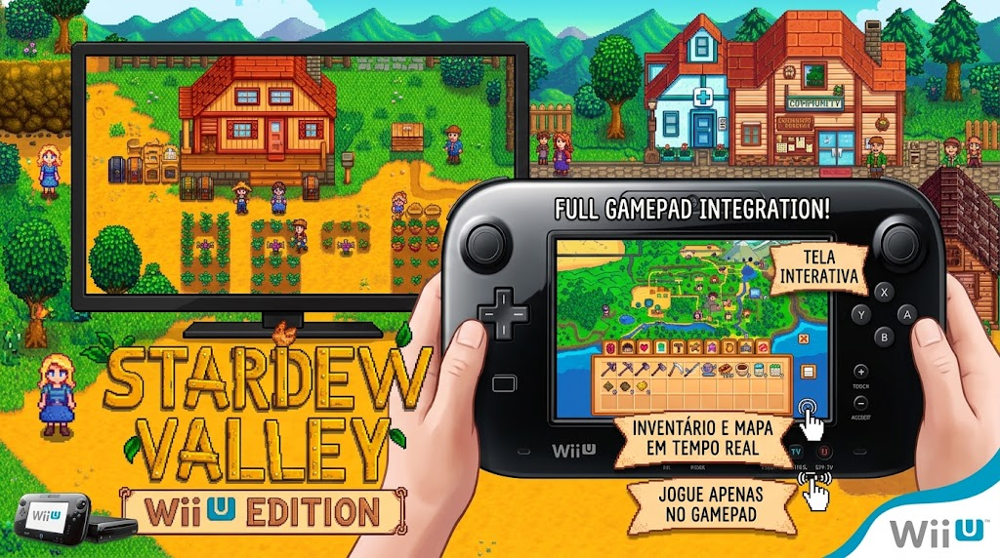

01 / CACHE
Região e chegada
Até 160 blocos 64×64 com descarte LRU; desenho só da câmera; preparação de até dois blocos por quadro perto de portas e transições, sem buracos visuais.
Protótipo nativo de Stardew Valley para Wii U / Cemu: TV Full HD, GamePad independente, 48 mapas, NPCs, agricultura e agora cache por região, UI otimizada e medições reais de desempenho.



A R2 foca em desempenho e Content: cache limitado do cenário, preparação de chegada, inventário do GamePad só quando muda, iluminação/chuva por tabelas, carro do Lewis corrigido e culinária original nas cozinhas melhoradas.
Até 160 blocos 64×64 com descarte LRU; desenho só da câmera; preparação de até dois blocos por quadro perto de portas e transições, sem buracos visuais.
TV 1920×1080 via GX2, GamePad independente, inventário reaproveitado até itens/dinheiro/data mudarem, e escala inteira do mundo por duplicação de pixels.
81 receitas originais (80 resolvidas), nove cozinhas das casas melhoradas, ovo frito inicial; 28 tiles do carro do Lewis com profundidade corrigida (2.756 px).
Linux/Vulkan, Mesa llvmpipe, host compartilhado, TV 1920×1080. Médias em janelas de 60 quadros (sem a primeira janela de aquecimento). Meta do projeto: mínimo 40 FPS, alvo 60 FPS — critério de validação, não garantia no Wii U físico.
| Cenário | FPS médio | Menor janela | Pior quadro | > 25 ms |
|---|---|---|---|---|
| Fazenda em movimento | 49.7 | 45.2 | 127.879 ms | 52/360 |
| Fazenda com chuva | 54.2 | 46.9 | 31.567 ms | 28/360 |
| Fazenda à noite | 54.4 | 50.4 | 38.533 ms | 28/360 |
| Cidade / carro Lewis | 60.0 | 59.1 | 29.408 ms | 1/360 |
| Cidade / rio | 60.2 | 59.9 | 23.816 ms | 0/360 |
| Interior Pierre | 60.0 | 59.4 | 29.526 ms | 3/360 |
15 suítes C++, assets, ASan/UBSan, 35 capturas com pixels idênticos à R1 (exceto a correção do carro), 862 objetos PowerPC comparados byte a byte. RPXs principal e compat compilados.
| Área | Evidência e limite |
|---|---|
| Mundo | 48 mapas, 34 NPCs, agendas, inventário, remessa, calendário, amizade, coleta, peixes e render portátil aprovados nos testes. |
| Sistemas | 51 cultivos, 15 construções da Robin, 69 cartas, lojas sazonais, áudio XACT parcial, save `stardew_wiiu_v011r2.sav` com importação da R1. |
| R2 | Cache limitado, preparação/descarte, transforms de noite/chuva, inventário invalidado sob mudança, culinária atômica original, UI com clipping/alpha. |
| Compilação | `stardew_explorer_v011r2.rpx` (GX2 Full HD) e `_compat.rpx` (OSScreen) no mesmo ZIP com o fonte, conforme entrega padrão. |
| Console físico | Não validado no Wii U físico nesta entrega. Validação principal no Cemu 2.6. |
VisibleFish continua parcial. Receitas de cartas/TV/lojas, geladeiras, tempero Qi e desbloqueios completos de culinária ainda faltam. Carrinho, montaria e teletransporte não estão anunciados como concluídos. Casamento, festivais integrais, mineração completa e muitas condições especiais seguem pendentes.
Cada versão sai em um único ZIP com executáveis e fonte. Meta 40–60 FPS é critério de validação; picos ainda existem e o hardware real não foi medido.
Abra o RPX no Cemu mantendo a estrutura de SD/Content da R1. Save: `stardew_wiiu_v011r2.sav` (importa a R1 e anteriores).
A demo no navegador ainda é a v0.1 do laboratório. A R2 roda como RPX no Cemu.